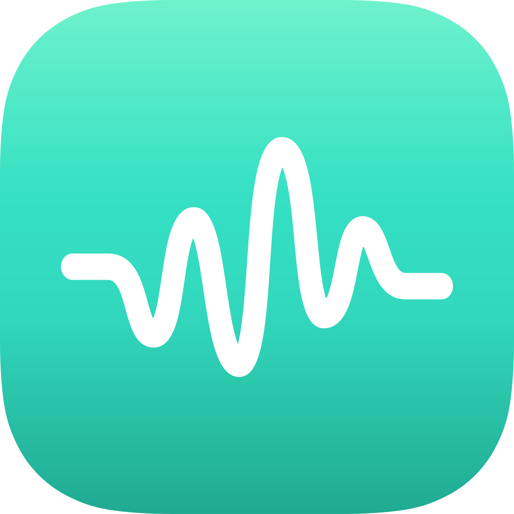

github.com/JonasGrunau/open_audio_analyzer
Open Audio
Analyzer
A free and open-source loudness and spectrum analyzer for desktop and tablets.
ITU-R BS.1770-4
· EBU R128 · verified against EBU Tech 3341 / 3342 in CI
GPL-3.0 · MIT